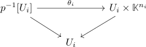

vector bundle
Definition
Let $\mathbb{K} \in \{\mathbb{C}, \mathbb{R}, \mathbb{H}\}$. Then a continuous map $p: E \rightarrow B$ between topological spaces is said to be a \(\mathbb{K}\)-vector bundle, if
- each fibre $p^{-1}[b]$ is endowed with a \(\mathbb{K}\)-vector space
- there exists a trivialzing cover, i.e. an open cover $U_i$ and $n_i \in \mathbb{N}$ such that

commutes for a homeomorphism $\theta_i$
- where $\theta_i$ is a vectorspace-homomorphism (even a vectorspace-isomorphism) on each fibre